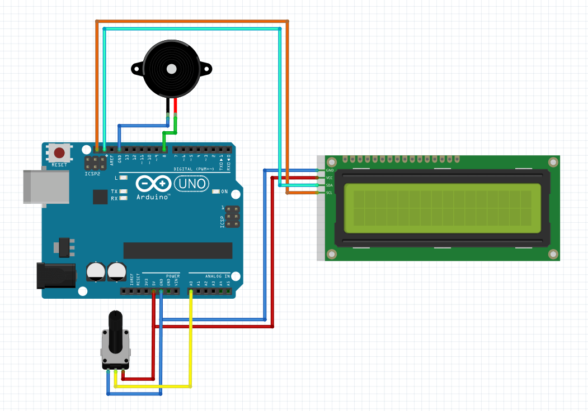

Here is a project that will help you build your own Arduino stopwatch using the Arduino Board and few other components. After working on this basic Arduino countdown timer, a user suggested adding few more functionality to it, which is why we are coming back with this other timer with a short list of additions: You can set the time without having to change the code and it actually let you know when it reaches zero.
Here is what we need:
- 1 x Arduino Uno board
- 1 x LCD with I2C converter
- 1 x Buzzer
- 1 x Potentiometer
- Jumper wires
- 1 x Breadboard
Here is schematic:
When you are done with the connections, you can upload the following program into the board.
The Code
#include <Wire.h>
#include <LiquidCrystal_I2C.h>
LiquidCrystal_I2C lcd(0x27,20,4);
//this values will help us to choose the time
long last_change;
long last_value;
long timer_value;
void setup()
{
//inti lcd
lcd.init();
//turn on backlight
lcd.backlight();
pinMode(A0, INPUT);
pinMode(8, OUTPUT);
}
void loop()
{
//if the value was changed less than 5 seconds ago this loop will work
while(millis() - last_change < 5000){
timer_value = map(analogRead(A0), 0, 1023, 1, 120);
if(timer_value != last_value){
lcd.clear();
lcd.setCursor(0,0);
lcd.print("Timer");
lcd.setCursor(0,1);
lcd.print(timer_value);
last_value = timer_value;
last_change = millis();
}
delay(10);
}
//after 5 seconds this will happen
lcd.clear();
lcd.print("starting...");
delay(3000);
long target = last_change + (timer_value * 60 * 1000);
//and then it will start displaying how much time there is until end of counting
while(millis() < target){
lcd.clear();
lcd.setCursor(0,0);
lcd.print("Time left:");
lcd.setCursor(0, 1);
lcd.print((target - millis()) / 1000 / 60);
delay(50);
}
//and few beeps at the end
for(int a = 0; a < 10; a++){
digitalWrite(8, HIGH);
delay(500);
digitalWrite(8, LOW);
delay(500);
}
while(1);
}
This is what the user can do: Set the time between 1 and 120 minutes. After specifying the time, it waits for 5 seconds and starts counting down. When the time is up, it beeps few times.